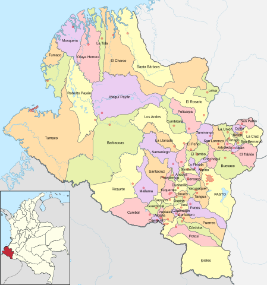

NARIÑO

El departamento de Nariño, situado en el suroeste de Colombia, es conocido por su diversidad geográfica, cultural y su riqueza en tradiciones. Limita al norte con el departamento de Cauca, al este con Putumayo, al sur con el Ecuador y al oeste con el océano Pacífico. Su capital es Pasto, una ciudad reconocida por su historia y su gente.
Geografía
Nariño presenta una geografía variada que incluye montañas, valles, lagos y una costa pacífica. La Cordillera de los Andes atraviesa la región, creando paisajes espectaculares, como el volcán Galeras, uno de los más activos de Colombia. El clima varía desde templado en las zonas montañosas hasta cálido en las regiones costeras.
El departamento cuenta también con diversas áreas naturales protegidas, como el Parque Natural Chimbilá y el Parque Nacional Natural Sanquianga, que albergan una rica biodiversidad.
Historia
La historia de Nariño está marcada por la influencia indígena, principalmente de los pueblos Pasto y Tzotzil. La llegada de los colonizadores españoles en el siglo XVI trajo consigo cambios significativos en la estructura social y económica de la región. En el siglo XIX, Nariño jugó un papel importante en la independencia de Colombia, siendo un punto de encuentro de líderes y movimientos revolucionarios.
Cultura
La cultura nariñense es rica y variada, caracterizada por sus tradiciones indígenas y mestizas. La festividad más emblemática es el Carnaval de Negros y Blancos, celebrado en Pasto en enero, que es Patrimonio Cultural Inmaterial de la Humanidad. Este carnaval es un reflejo de la diversidad cultural de la región y se celebra con desfiles, música y danzas que expresan la identidad de sus habitantes.
La música también es fundamental en la cultura de Nariño. El "bambuco" y la "joropo" son ritmos tradicionales que se celebran en fiestas y reuniones familiares.
Economía
La economía de Nariño se basa en la agricultura, la ganadería y el comercio. Los cultivos de café, maíz, caña de azúcar y papa son predominantes. Nariño es uno de los principales productores de café de alta calidad en Colombia, conocido por su sabor distintivo.
Además, la pesca y la producción artesanal, especialmente de textiles y cerámica, también son importantes para la economía local.
Turismo
Nariño ofrece una variedad de destinos turísticos que atraen a visitantes nacionales e internacionales. Algunos de los lugares más destacados incluyen:
Pasto:
La capital, con su arquitectura colonial y la famosa Plaza de Nariño.
Laguna de La Cocha:
Un hermoso lago rodeado de montañas, ideal para el ecoturismo y la pesca.
Santuario de Las Lajas:
Una impresionante iglesia construida sobre un cañón, que es un lugar de peregrinación y turismo.
Volcán Galeras:
Un atractivo para los amantes de la aventura y el senderismo.
Desafíos
A pesar de su riqueza cultural y natural, Nariño enfrenta desafíos como la pobreza, la violencia y el narcotráfico, que afectan algunas de sus comunidades. La falta de infraestructura y servicios básicos también es una preocupación en ciertas áreas.
SI DESEA VOLVER A LA PAGINA PRINCIPAL, DE CLICK AQUI